Back
Confounding Tools

The project that discribe my life during Covid-19 Pandamic. I read news everyday and the words in the poster were the terms that showed up everyday and those are making me feel worries and scare. Furthermore, it also create a chaotic mess that Covid-19 brought to our lives.
WIP
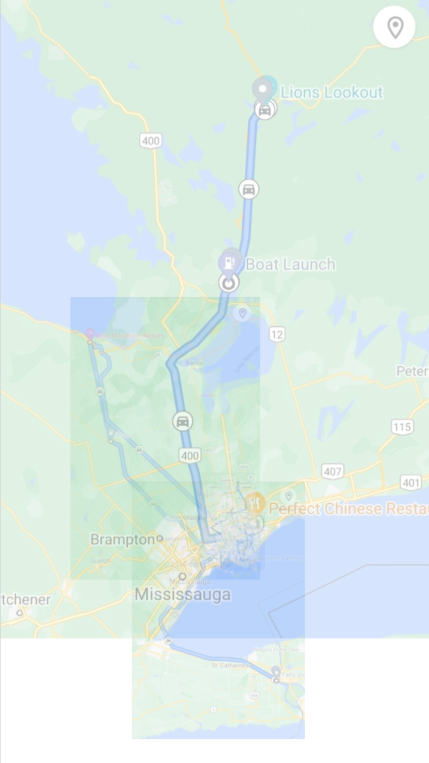
My inital idea was to create a poster that based on Google Map. I used the history tool in the app to shows where I went to during COVID. I scaled the map based on the real size and started layering them.
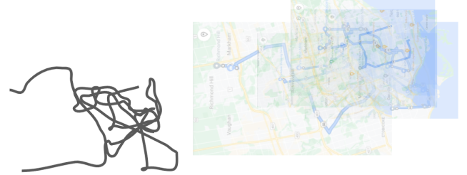 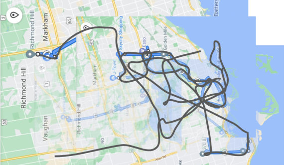
After layering all of the map together, I started to trace the lines and it became a mess of lines.
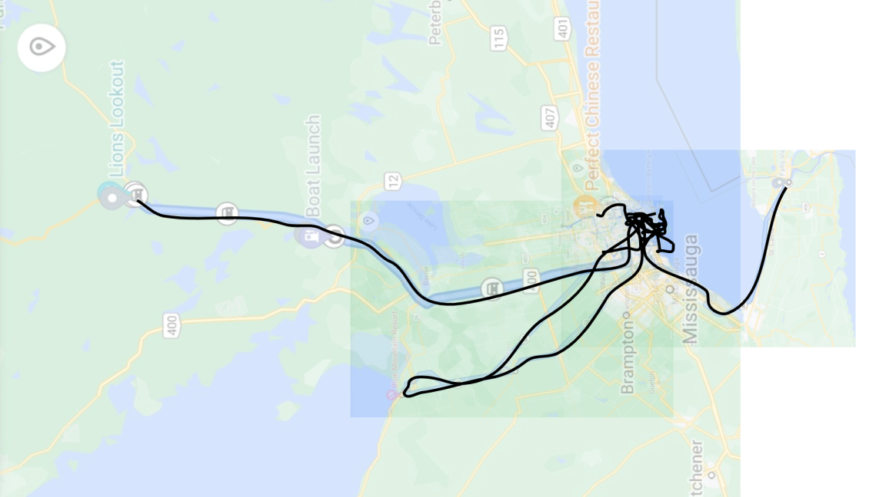
I kept going...
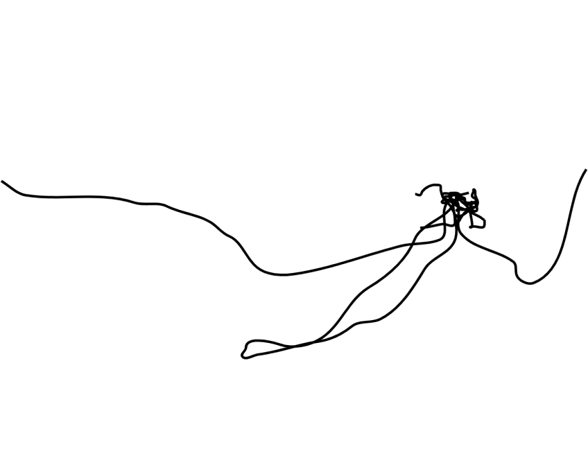 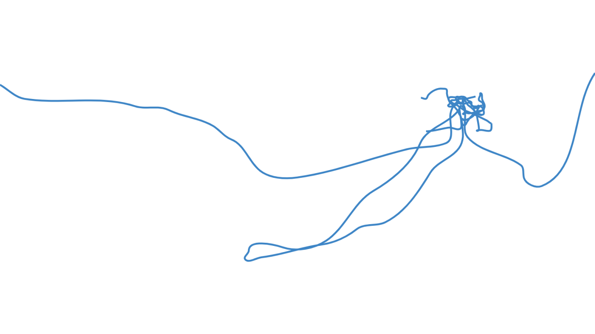 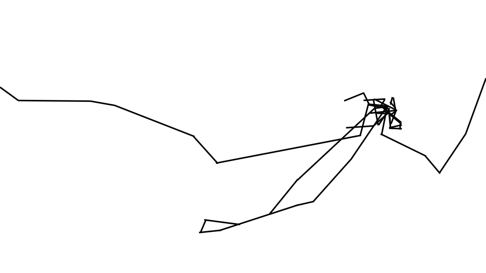
Then I played around the line by changing colours and created a sharp edeged version.
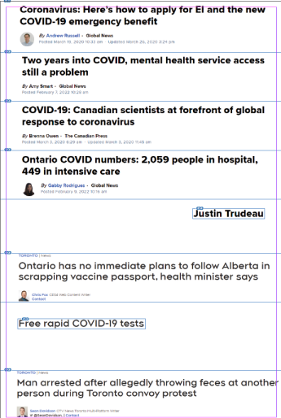
After finishing the lines. I need to have a backgrond for the lines. So I found a lots of headlines from GlobalNews and put them together. But they appeared to be a bit flat and boring to look at, so I only crop out the most important keywords and make a collage.
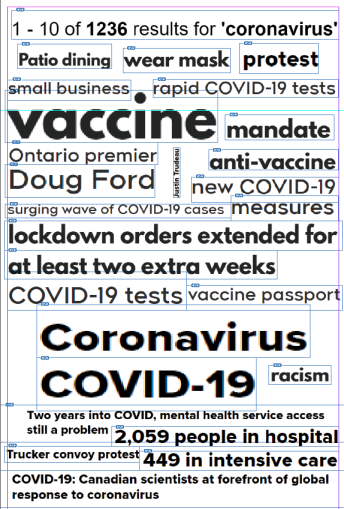
And it looks like this. I also added the red highlight under a certain words later. At this stage, I felt that the my first concept would not fit into this design. So I made the lines that I created using the map as my emotional gauge.
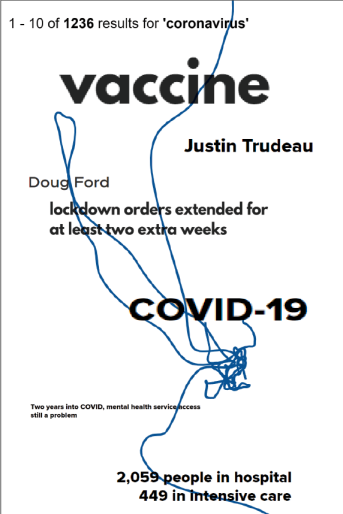
Another idea was this.
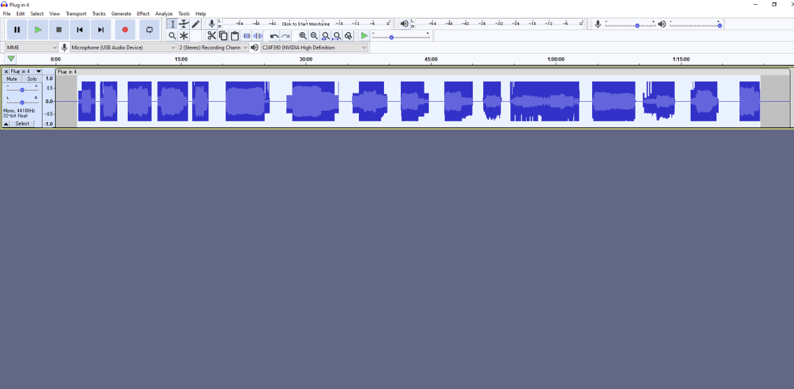
Then I put the collage I just made into Audacity and start messing around with the sound effects (of course image has no sound). The changes will effects the outcome of the image.The results are random and I have no control over the effects on the image. It tooks me over 10 times to get the result I wanted. There were lots of times where the files was corrupt and unable to open... etc.

This was the First-final draft that I made. With my classmates and professor feedback, I realized that the blue line was distracting and it serve no real purpose to the poster. So I changed in the final stage.
Reflection
The project was made using headlines, a graph from from newspapers, Audacity software and Adobe Indesign. The project was my attempt of using non-art software to create an actual artwork. This allows me to experiment and make new things outside of my comfort zone. For one, Audacity was known as a software to edit audio but I was able to use it to create the glichy effect. At first, it was hard to think of any idea for the project due to the debate of what software to use. Then I narrowed the idea to use news headlines because reading news was my usual activity. Therefore I was able to come up with the final idea.